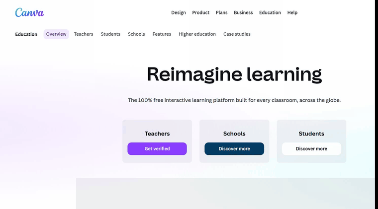
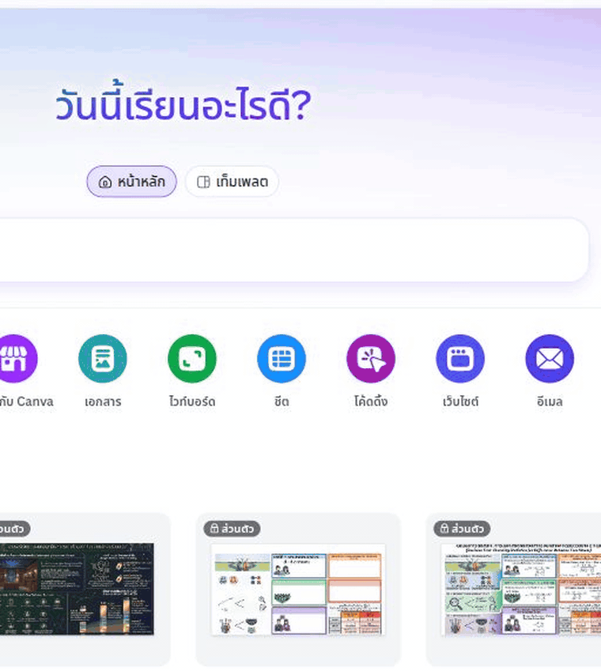
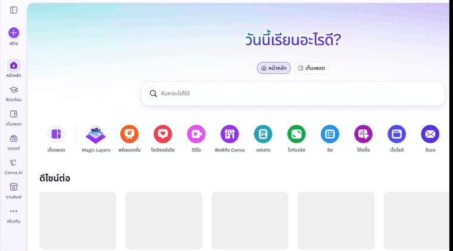
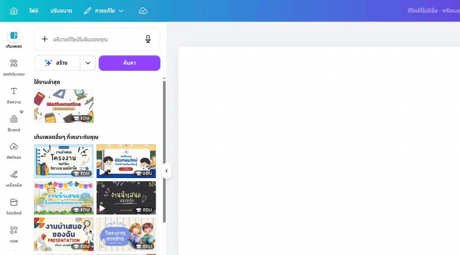
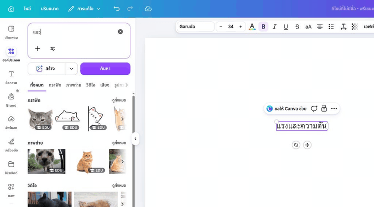
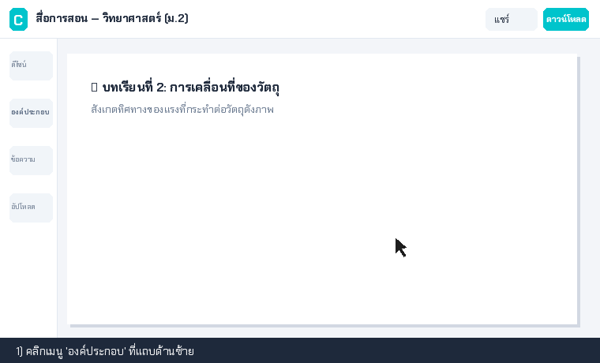
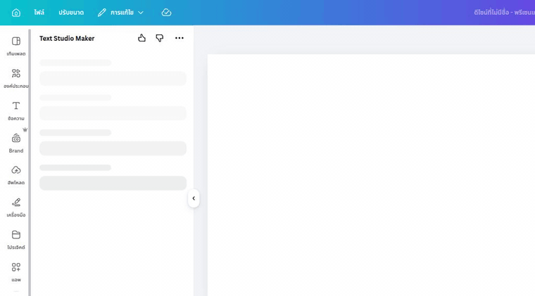
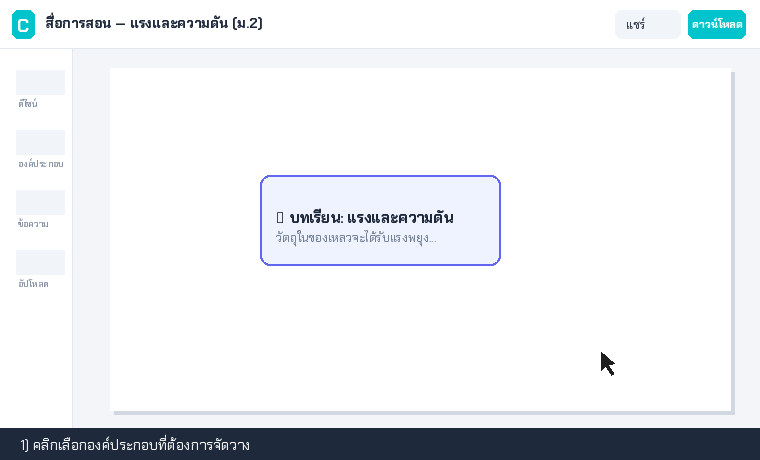
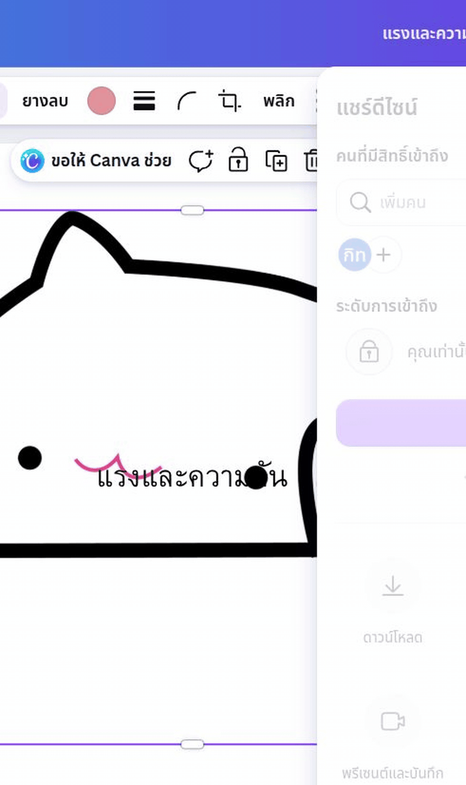

คำแนะนำทีละขั้นตอนพร้อมตัวอย่างคลิกจริง
ดู GIF สั้น ๆ แล้วทำตามได้ทันที — 1 GIF = 1 Action · ครอบคลุมทั้งงานสอน เอกสาร สื่อ และเทคนิคแปลงสูตรคณิตศาสตร์
บอก AI ว่าเป็นใคร ให้ข้อมูลอะไร อยากได้แบบไหน ยิ่งละเอียดยิ่งได้ผลลัพธ์ตรงใจ
คัดลอก Prompt จากคลัง แล้วแทนที่ช่อง [...] ด้วยข้อมูลระดับชั้นและวิชาของตนเอง
คุณเป็นครู[วิชา/ระดับชั้น เช่น วิทยาศาสตร์ ม.2] ออกแบบแผนการสอน Active Learning 1 คาบ 50 นาที เรื่อง [หัวข้อ] - นักเรียน: [จำนวน/ระดับความสามารถ] - ระบุ: จุดประสงค์เชิงพฤติกรรม, กิจกรรม 3 ขั้น (นำ/สอนแบบปฏิบัติ/สรุป), สื่อ และเกณฑ์ประเมิน ขอภาษาไทยกระชับ ใช้สอนจริงได้ทันที
🔍 Protocol ตรวจทาน: หาก AI อ้างอิงกฎหมายหรือเลขที่หนังสือราชการ ให้ค้นหาเลขฉบับจริงในเว็บ สพฐ./ก.ค.ศ. เสมอ ถ้าหาไม่เจอ = AI แต่งข้อมูล
ครู K-12 (ประถม–มัธยม) ใช้อีเมลโรงเรียน (.edu/.ac.th) หรือบัตรครู สมัครที่ canva.com/edu-signup เพื่อปลดล็อกฟีเจอร์ Pro ฟรีทั้งหมด

คลิกปุ่ม 'สร้างดีไซน์' ที่มุมขวาบน เลือกขนาดที่ต้องการ เช่น โปสเตอร์ (A4) หรือ งานนำเสนอ (16:9)

ค้นหาเทมเพลตที่ตรงกับวิชาในแท็บ 'การออกแบบ' แล้วคลิกเพื่อนำมาเป็นโครงสร้างตั้งต้น

ไปที่เมนู Magic Media พิมพ์ Prompt ภาษาอังกฤษ เช่น flat vector illustration of cell biology, clean background, no text เพื่อป้องกันตัวหนังสือไทยเพี้ยน

คลิกที่รูปภาพ $\rightarrow$ เลือก 'แก้ไขรูปภาพ' (Edit Image) $\rightarrow$ คลิก 'BG Remover'

ค้นหาไอคอน กราฟิก เวกเตอร์ หรือกรอบข้อความในแท็บ 'องค์ประกอบ' (Elements) แล้วลากวางลงบนหน้างาน

กดปุ่ม 'T' หรือเลือกแท็บ 'ข้อความ' วางข้อความที่สรุปมาจาก Gemini เลือกฟอนต์ไทยสวยงาม เช่น Chakra Petch, Sarabun, IBM Plex

คลิกที่วัตถุ ลากมุมเพื่อย่อ-ขยาย หรือคลิกขวาเลือก 'ตำแหน่ง' (Position) เพื่อจัดหน้า-หลัง

คลิกปุ่ม 'แชร์' (Share) $\rightarrow$ 'ดาวน์โหลด' เลือกประเภทไฟล์ PNG (สำหรับภาพ) หรือ PDF Print (สำหรับปริ้นท์ใบงาน)

อัปโหลดไฟล์ PDF เกณฑ์ ว.PA, เอกสารหลักสูตร หรือไฟล์บทเรียน (รองรับสูงสุด 50 ไฟล์/สมุด)
ไปที่แท็บ Studio ด้านขวา คลิก 'Customize' ใส่เงื่อนไข เช่น "อธิบายภาษาไทยเป็นกันเองสำหรับเด็ก ม.ต้น" แล้วกด Generate
💡 จุดเด่นของ NotebookLM: ตอบอิงเฉพาะเนื้อหาในเอกสารที่แนบเท่านั้น ทำให้ตัดปัญหา AI กุข้อมูลเท็จ เหมาะมากสำหรับการสรุปเกณฑ์ราชการและทำ Test Blueprint
ย่อยบทเรียนเป็น 4 บล็อกสั้น และขอ Prompt ภาษาอังกฤษสั่งสร้างภาพประกอบ 1 ภาพ
โหลดเนื้อหาเข้า NotebookLM กด Generate Audio Overview ปล่อยให้ระบบสร้างเสียงระหว่างที่เราทำ Canva
เลือกเทมเพลต Infographic วางข้อความ 4 บล็อก + ใส่รูปภาพตัดพื้นหลัง + ตกแต่งด้วย Elements
ตรวจทานคำสะกดภาษาไทยและความถูกต้องของเนื้อหา ดาวน์โหลด PNG/PDF ส่งเข้ากระดาน Padlet